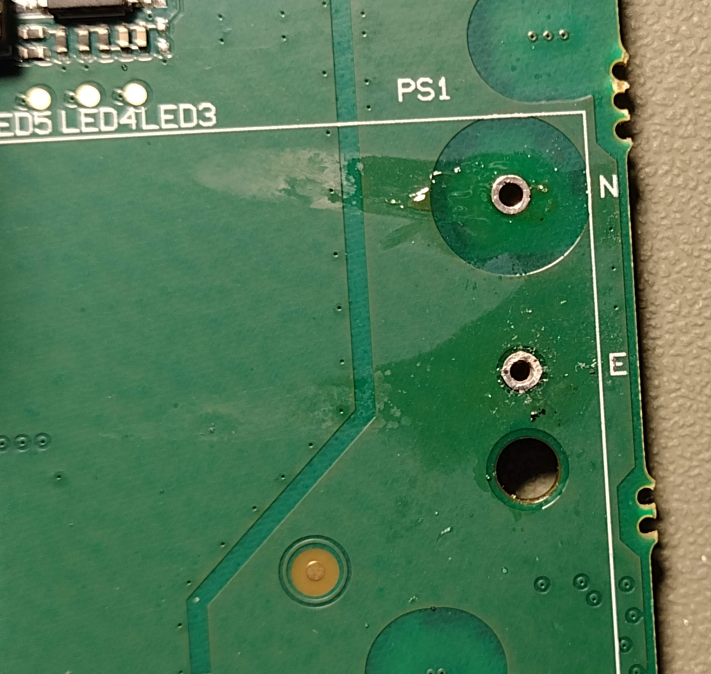

Blackmagic web presenter power supply repair
When will they learn, don't put electrolytic capacitors next to heat sinks!
Fault
This repair involves mains electricity and danger of death so follow along at your own risk. Electrostatic safety procautions should be taken.
The blackmagic web presenter is a relatively affordable way of capturing an SDI or HDMI signal for use as a virtual webcam for meetings and streams.
...until you leave it on 24/7 and it dies prematurely.
The LED on the front of this unit is intermittently flashing on and the device isn't being detected in Windows.
Disassembly
I removed the 8 countersunk PZ2 screws on the sides and removed the top cover. The fan is bolted to the lid, so unplug it carefully before removing the lid fully.
With mains power connected I took great care in probing the 12V PSU output with a voltmeter.
I saw that as the LED flashes on, the voltage jumps up, and when the LED goes off, the supply drops.
The most likely cause for this is power supply failure, although that isn't guaranteed. It's possible that the circuit consuming power is causing the short circuit/overload protection of the power supply to engage. Luckily not in this case.
After removing mains power from the device,
I removed the front plate from the case, held in with another 4 PZ2 countersunk screws.
To remove the PCB is a tricker ordeal. Unfortunately it's a must, to be able to remove parts from the PSU, you must be able to access the bottom of it.
To access the bottom of the PSU you must remove it which requires access to the bottom of the main PCB.
- Unplug all cables from the device, including power!
- Remove the 3 T10 self tapping black screws from the XLR and RCA connectors on the rear.
- Remove the 3 nuts and internal tooth lock washers from the SDI/BNC connectors.
- Remove the 5.5mm Nyloc nut and the earthing jumper near the IEC C14 inlet and unplug the mains connector from the PCB.
- Remove the 4 T10 pan head screws securing the PCB to the case.
Carefully remove the PCB without damaging any components on the bottom. Look through the hole in the side of the case for assistance. The first time I did this, I knocked two multilayer ceramic capacitors off but luckily they weren't damaged and so could be reaffixed with some flux and patience.
Diagnosis and repair
At this point I had a hunch, the classic design mistake here is an electrolytic capacitor tucked in too closely to multiple heatsinks.
Remove the power supply brick from the main PCB by heating each of the 5 pins (L, N, E, GND and 12V) in turn and gently pulling the brick free as you go.
Do this in a few cycles and don't rush so as to minimize the bending of either PCB.
Spot the memory chip hiding below.
Use a high quality desoldering wick to remove the excess solder from the pins protruding from the power supply.
Slide the plastic plate off the bottom of the PSU.
At this point, I removed each electrolytic capacitor one at a time and measured it with my ESR meter. I found EC3 to be the problem.
I measured the capacitance to be 74 uF, which is pretty low but not likely to cause this fault. The ESR was 14 Ω which is, however, totally unacceptable.
For reference
the capacitor I purchased as a replacement measured 0.16 Ω with 0.5% vloss and 95 uF, on the same meter.
As is good practice, the replacement was the same capacitance, a higher voltage rating (35 V instead of 25 V), a higher temperature rating (130°C rather than 105°C) and the part was made by Rubycon rather than KSJ.
I was a bit naughty here. Hoping the avantage of a lower temperature outweighted the additional inductance of the longer leads,
I extended the capacitor out away from the heatsink. I secured it with some epoxy (not shown in the photo) although neutral cure silicone would have been a better choice.
The most fiddly part of the repair is removing the excess solder from the PSU mounting holes on the main PCB.
I removed most of it with desoldering wick after adding fresh leaded solder.
Grounds and earths in particular tend tend to absorb a lot of heat so some of the pins were hard to entirely clear. Some solder was left suspended half way through the thickness of the board.
To remove it, I used a 1mm twist drill in a pin vise to slowly clear it while applying almost no force and ensuring the swarf falls away from the rest of the PCB.

After cleaning the flux residue with isopropyl alcohol, I fitted the plastic spacer back to the PSU and soldered it in place. After reassembling and not forgetting the earthing bond, the unit powers up!
A nice warm orange light replaces the green flicker and Windows detects the device too. I used OBS for testing and a Mac mini as an HDMI source.
The fan speed does increase with temperature, but I wish it was slightly more aggressive. As a rule of thumb, for every ten degree reduction in temperature, an electrolytic capacitor lasts twice as long.
© James Baber 2022.